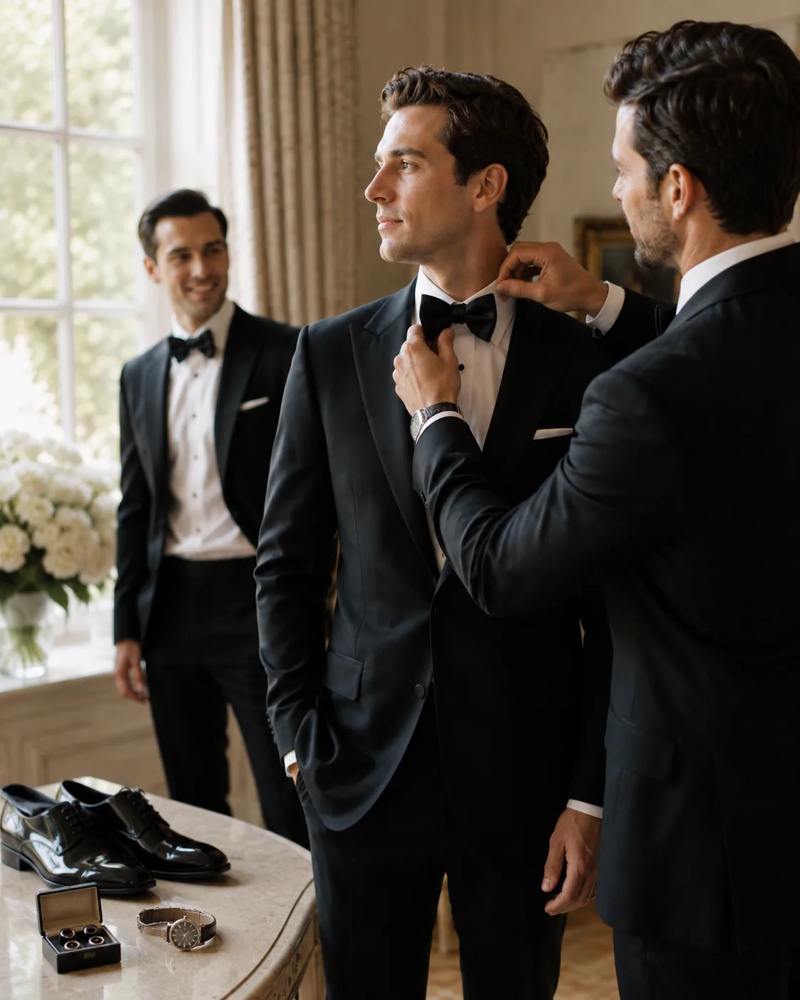
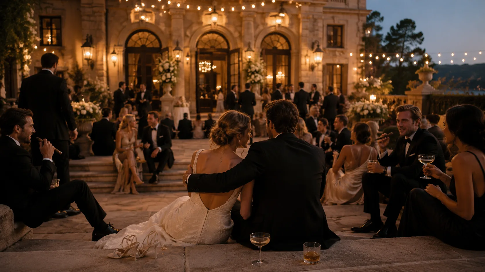
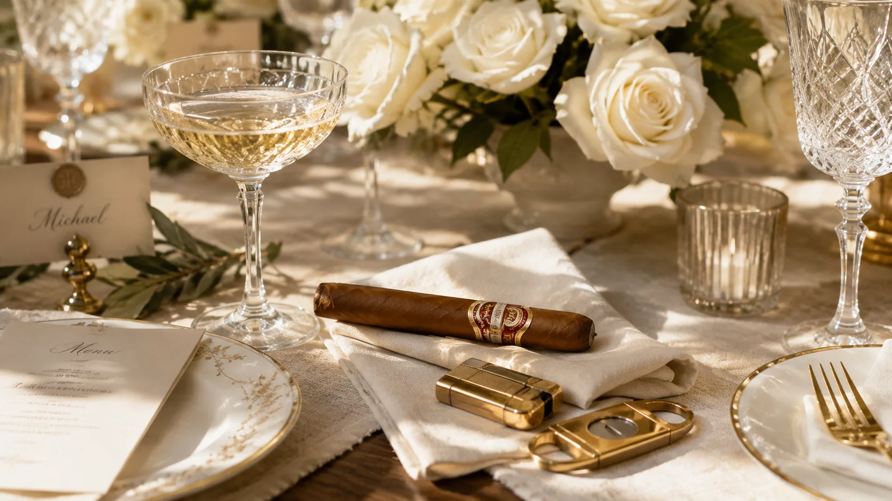
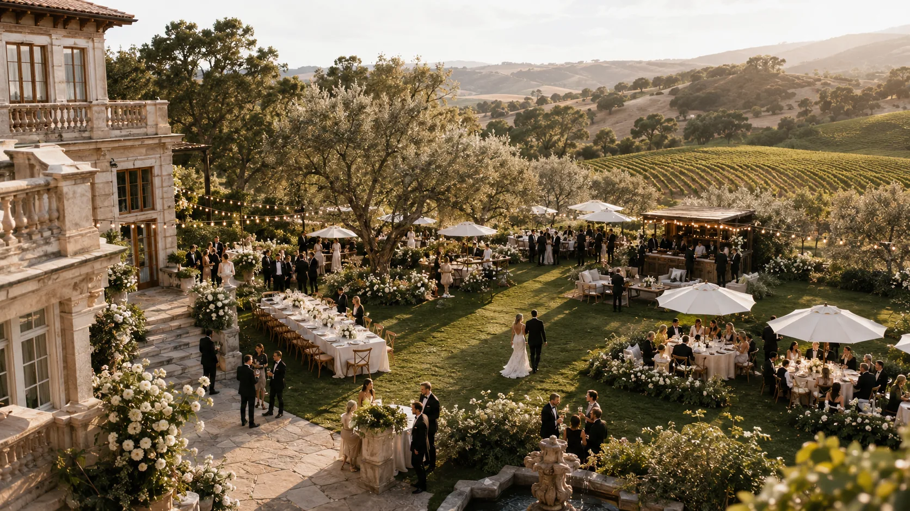
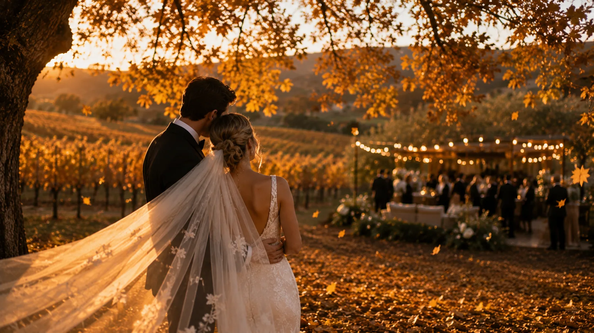

Why a Cigar Lounge Becomes the Most Memorable Part of a Wedding.
Long after the last dance, guests remember the hour they gathered around the glow of a cigar lounge.
An Evergreen Feature9 Minute Read
The reception has reached its golden hour. The toasts have been given, the first dance has come and gone, and the light over the lawn has turned the color of honey. Somewhere behind the music, a different kind of evening is quietly beginning. At the edge of the celebration — past the tables, under a canopy of café lights — a low, warm room has assembled itself out of nothing: a few chairs, a table dressed in leather and cedar, an attendant in no particular hurry. One guest wanders over out of curiosity. Then two. Then a small circle forms, drinks in hand, and does not disperse for the rest of the night.
Every wedding is built around its planned moments — the vows, the toast, the cutting of the cake. They are the photographs on the mantel. But the evening a couple's guests describe for years afterward is almost never one of those. It is the unscripted hour that came after, when the schedule had run out and no one wanted to leave. More and more, that hour has a place to happen: a lounge, set a little apart, where the celebration slows down and turns, at last, into conversation.
The Gathering Place.
People move toward warmth. It is the oldest instinct at any celebration, older than the wedding itself — the pull of a fire, a doorway, a corner of the room where something unhurried is happening. A cigar lounge answers that instinct without ever announcing itself. There is no line, no host working the crowd, no moment anyone is asked to perform. There is only a glow at the edge of the evening, and the quiet permission to step into it.
What gathers there is a particular kind of company. The uncle who has been waiting all night for a reason to loosen his tie. The college roommates picking up a conversation twenty years old. The father of the bride, who has smiled for a thousand photographs and would now like, simply, to sit. A lounge asks nothing of them but their presence. And so they stay — not because they were invited to, but because, for once, no one is telling them where to be.

The quiet hour before the day begins
When Conversation Becomes the Entertainment.
A wedding spends most of its evening asking guests to watch. They watch the couple enter, watch the toasts, watch the dances that belong to other people. It is beautiful, and it is also, quietly, passive. The lounge inverts that. Here, no one is an audience. The entertainment is simply one another — the story half-told across the table, the introduction that turns into an hour, the laughter that carries just far enough to make the next person curious.
There is a craft to it, though it looks like no craft at all. The attendant knows when to offer and when to disappear. He cuts and lights with the practiced economy of someone who has done it ten thousand times, and then he steps back, because the point was never the cigar. The point was the pause it creates — the few slow minutes it takes to draw one properly, minutes that cannot be rushed and so become an invitation to talk. Conversation is the oldest luxury there is. A lounge is simply the room that makes space for it.
The Luxury of Slowing Down.
A wedding is a machine of momentum. Every hour has been accounted for, every transition timed, and the couple at its center has spent the day being gently moved from one moment to the next. So has everyone else. By the time the evening deepens, the rarest thing in the room is not the champagne or the flowers. It is stillness.
A cigar cannot be hurried. That is its entire quiet argument. It asks for thirty unhurried minutes and gives them back doubled — a stretch of the evening with no schedule attached, where the only agenda is the person across from you and the slow blue smoke rising into the dark. In a celebration engineered down to the minute, the lounge is the one place that runs on no clock at all. Guests feel the difference before they can name it. They have been given permission to stop.

The one hour with nowhere to be
A Pleasure Every Generation Shares.
Few things at a wedding bridge the years. The dance floor belongs to the young; the quiet tables belong to the elders who tire of the noise. But the lounge draws a cross-section no other corner of the evening can. A grandfather remembers the ritual from a different era and is delighted to find it here. A groomsman in his twenties tries his first and is quietly initiated into something older than he is. Between them, a conversation begins that neither would have found on the dance floor.
That is the unspoken gift of it. A cigar is an heirloom gesture — a thing fathers did, and grandfathers before them — and to offer it at a wedding is to fold a little of that lineage into the night. The couple's families arrive as strangers to one another and leave, often, as something closer. Some of that happens in the low light of the lounge, where the generations finally sit at the same table, and the years between them stop mattering for a while.
There is nothing to explain and no etiquette to fail. A first cigar is a small rite of passage precisely because someone older is there to hand it over — a cutter offered, a light steadied, a quiet word about drawing it slow. The lounge stages that exchange without ceremony, and the photographs that come out of it are the candid ones a couple treasures most: two generations leaning in, heads together, caught in the middle of a story neither will finish for hours.
The Details That Are Remembered.
Memory is a poor archivist of the grand and a faithful keeper of the small. Ask a guest about a wedding a year later and the budget lines dissolve — the flowers, the linens, the things that cost the most. What remains is texture. The weight of the cutter passed hand to hand. The particular hush as the first cigar was lit. The band of paper slipped off and pocketed as a souvenir, found weeks later in a jacket and turned over with a smile.
These are the details that outlast the photographs. A great lounge is composed of them: the leather roll of cutters, the flame drawn slow and steady, the attendant who remembers which guest preferred which wrapper and offers it again before he is asked. None of it announces itself; all of it is remembered. What stays with a guest is almost never the grandest thing in the room. It is the small one they find themselves describing a year later, unable to say quite why it stayed.

The small things memory keeps
Under an Open Sky.
An outdoor reception was always waiting for this. The estate lawn, the vineyard terrace, the country-club veranda with the valley falling away beyond it — these are settings made for lingering, and they ask for a reason to stay. Indoors, a cigar is a courtesy managed around ventilation. Outdoors, it belongs. The smoke drifts up and away into the evening air, and the whole enterprise takes on the ease of a thing done exactly where it was meant to be done.
Placed at the margin of an open-air celebration, a lounge does quiet architectural work. It gives the far edge of the party a reason to exist — a second gravity, away from the music, for the guests who want the night without the noise. The couple crosses the lawn to it at some point in the evening, hand in hand, and the whole reception seems to organize itself between two warm poles: the dancing at one end, the low conversation at the other, and the cool dark garden holding both.

The far edge of the evening, given a reason to gather
An Autumn Evening.
Any season suits it, but autumn suits it especially. There is a reason the calendar's most beautiful weddings so often fall in the cooler months, when the light goes long and amber and the air carries the first woodsmoke of the year. A lounge belongs to that air the way it never quite belongs to the heat of high summer. Struck against the first chill, a flame stands taller. The smoke — cedar, warm earth, a curl of sweetness — reads richer in cool air, and the guests, reaching for a jacket and a chair nearer the warmth, are already in the mood the lounge was made for.
It is, in the end, the same instinct a wedding is built on: to gather close, and to make the night last. We wrote about it once as its own quiet subject — the way the turning year draws people in and slows them down — in Autumn Is Cigar Season. A cool-weather reception simply gives that instinct a wedding to attend. The vineyard turns gold behind the tables, the evening comes early and is slow to end, and the lounge glows a little brighter for the dark that gathers around it.

The season that asks us to linger
Champagne, the Table, and the Cigar.
The finest weddings are, in their way, an argument for the pleasures of the table — a menu chosen with care, a wine paired to each course, a celebration that honors the senses without apology. A cigar lounge is the natural last movement of that argument. It arrives where a great dinner arrives: after the plates are cleared, when the appetite for flavor has not ended but simply changed, and the evening wants something to hold rather than consume.
Champagne and cigars have kept company for a century for a reason. The wine's brightness cuts the smoke's depth; the smoke gives the wine somewhere to go. Together they mark a celebration as complete — the toast and its long echo. It is the same instinct that makes a thoughtful gesture outlast an expensive one, a subject we explored in Beyond the Gift Basket: the most memorable hospitality is never the loudest. It is the detail that says, without a word, that no expense of attention was spared.
Fine dining understands the value of a last course that lingers, and this is the wedding's. Once the tables are cleared, the celebration does not so much end as change register — from the bright, public pleasure of the meal to the low, private one of good company kept a little longer. A lounge is where that shift is given a home, and where the flavors of the night resolve into something quieter, and no less considered than the courses that came before.
Choosing the Experience.
Not every cigar bar is a lounge, and the difference is felt the moment a guest steps into one. A table of cigars left out is an amenity. A tended lounge is hospitality — and hospitality is a person. What separates the two is the attendant: someone who reads the room, guides the uninitiated without condescension, cuts and lights with care, and knows that his finest work is the moment he becomes invisible and the conversation takes over. The cigars matter, of course; they should be genuinely fine. But it is the tending that guests remember.
The best of these arrive as a mobile lounge — a complete room brought to the setting and dressed to it, whether the setting is a vineyard terrace, a private estate, or a country club above the bay. For couples and planners across Northern California, that is where Simply Sexy Cigars quietly fits: a considered luxury wedding cigar lounge, tended by an ambassador, set at the edge of the celebration as its unhurried final chapter. It is never the point of the night. It is only the thing that helps the night last. If you are planning a wedding and want an hour your guests will still be describing next year, begin the conversation.
Late in the night, when the band has packed away and the last guests are finding their coats, the couple slips out for a final moment alone. Their path takes them past the lounge — nearly empty now, the café lights still burning, a last curl of smoke rising into the cool dark. A few stragglers look up, raise a glass, and let them pass.
In the morning, the flowers will be gone and the tent will come down. But this is the frame that stays: the warm glow at the garden's edge, the people who lingered there, the hour no one wanted to end.
That hour is the only thing we have ever set out to make.